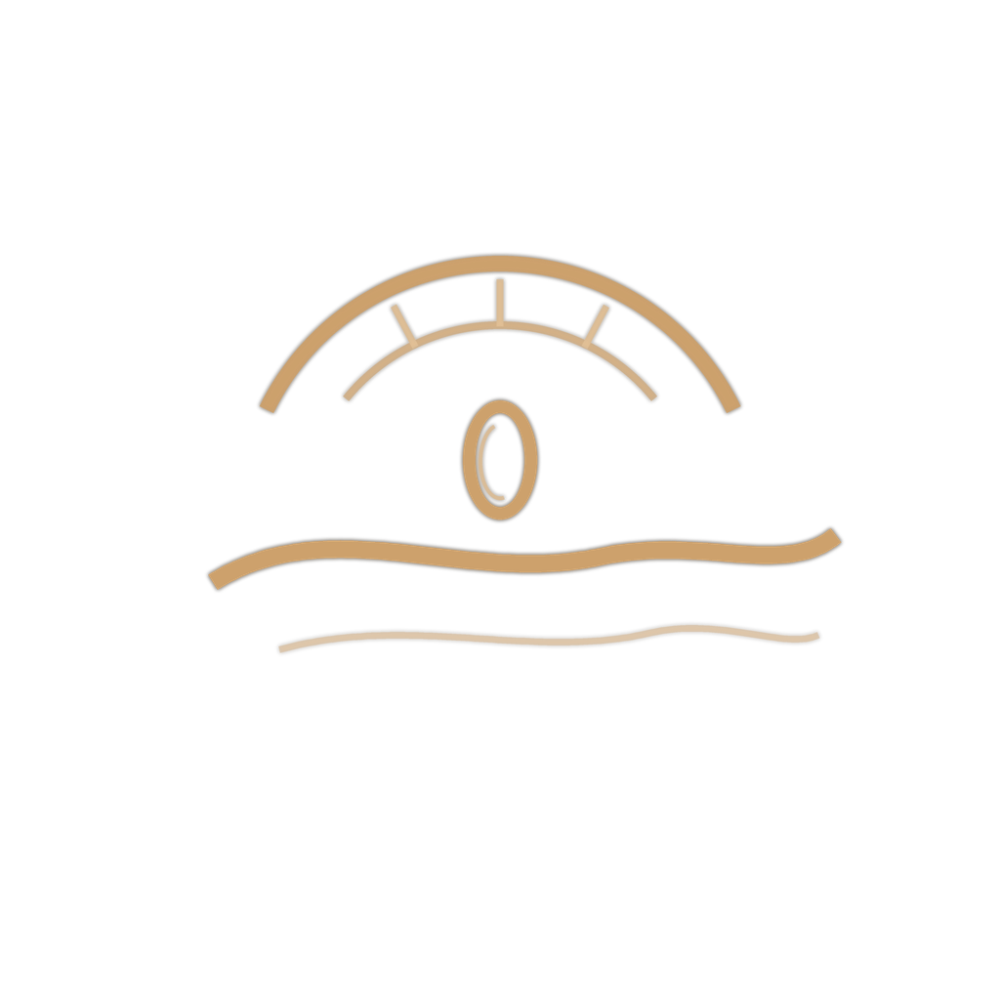

About Petaluma Photography

About
Petaluma is one of those places that rewards attention. Located in the heart of Sonoma County just north of San Francisco, the light here is different — golden and low in the afternoons, dramatic in the rainy season. From the historic downtown grain mill silos to the Petaluma River at dusk and the rolling hills that glow in October, it's a place people drive through on their way to Northern California's wine country, and then keep thinking about.
This site is a personal project to collect and share photographs that capture something true about this place. Some are mine. Most are by other photographers who've shared their work through Unsplash and Pexels — people who've seen the same things I have and had the presence of mind to capture them.
It's an ongoing project. I add to it when I find something worth adding.
Get in Touch